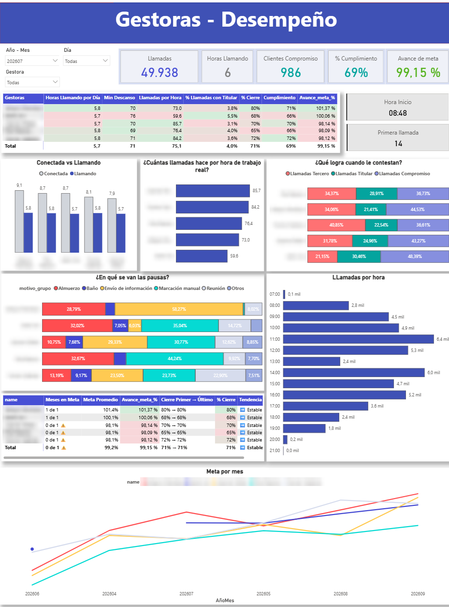
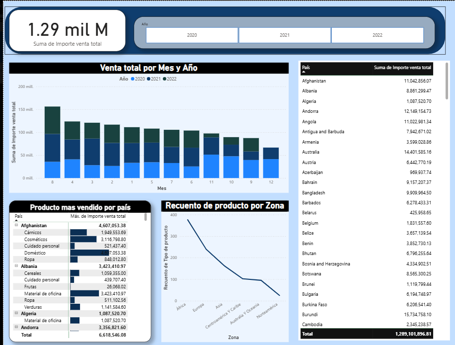
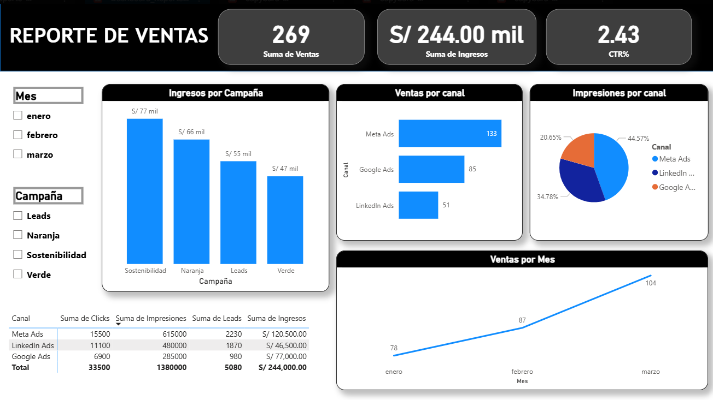
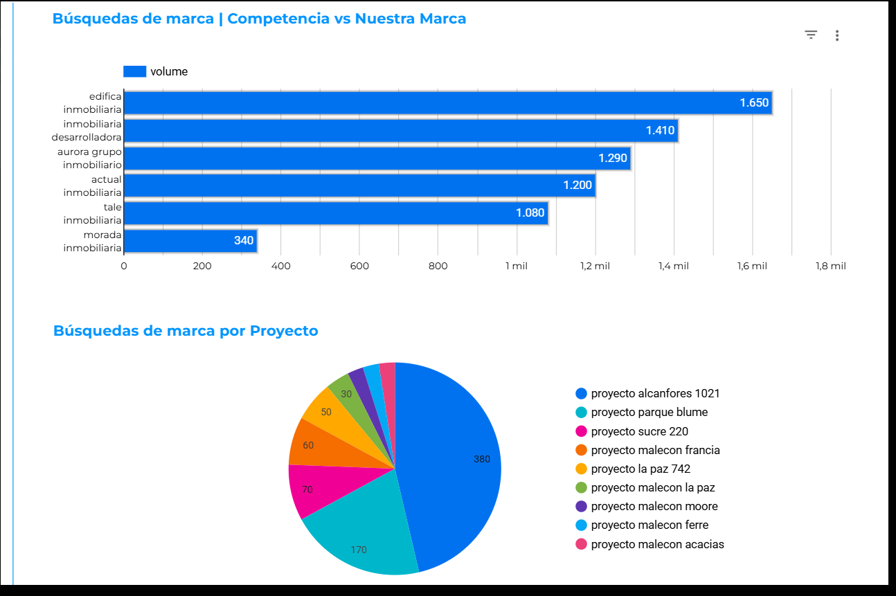
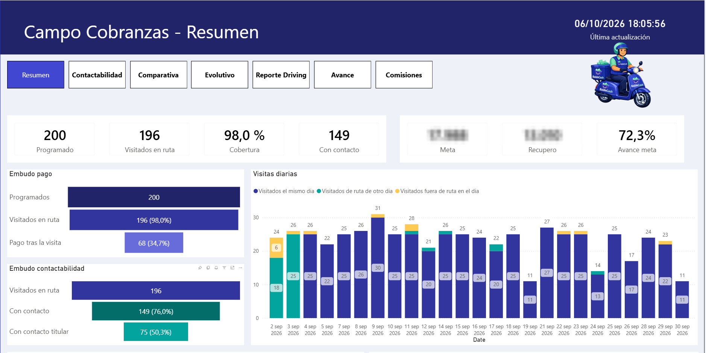
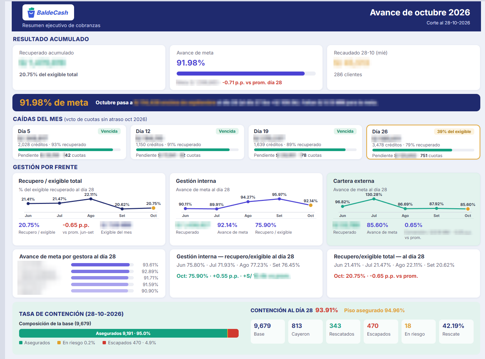

Soy David Anastacio. Hice mis prácticas de datos en cobranzas, en una fintech peruana. Me acostumbré a empezar por lo que el equipo necesitaba saber: quién llega a la meta, a quién llamar primero, si cerramos el mes. Recién después abría Power BI, SQL o Python.
Cada cuánto se actualiza solo el tablero de cobranza del día.
De diferencia entre mi resumen por SQL y el Power BI oficial. Lo cuadré al centavo.
AUC del modelo que ordena a qué cliente llamar primero, probado en un mes anterior.
De llamadas consolidadas en un modelo estrella para medir a cada gestora.
La líder del equipo tenía una duda concreta: si todas trabajan el mismo horario, ¿por qué unas llegan a la meta y otras se quedan en 98 %? Junté seis meses de registros de la central de llamadas y armé un tablero donde cada gráfico lleva como título la pregunta que responde.

Cuatro etapas. Cada una nació de algo que la anterior no podía resolver.
Datasets de ventas y marketing. Aprendí tarjetas, segmentadores y a armar una página.



Los dejo como están. Volví a verlos con lo que sé ahora y esto es lo que cambiaría:
Campo Cobranzas: siete páginas para seguir a los gestores que visitan clientes.

Refrescar el tablero tardaba demasiado para un reporte que se necesita a las 8 a.m.

Antes la jefa del equipo lo armaba cada mañana pegando capturas del Power BI. Ahora hay un botón que consulta la base, recalcula todo y otro que lo manda por correo con el texto listo.
Lo difícil fue la confianza. Pasé cada medida DAX a SQL y comparé cifra por cifra con el tablero oficial hasta que no quedó un centavo de diferencia. Recién ahí lo usamos.
Proyectar el cierre, priorizar llamadas y dejar procesos que no dependen de mí.
Excel del equipo, imagen para el correo y la meta del día por gestora. La productividad va aparte, solo para la jefa.
Se regenera cada 15 minutos y se ve desde el celular en una web interna. Al cierre del día deja un reporte final.
Probabilidad de pago por cliente según la hora y el punto del mes. La probé contra un mes que ya había cerrado.
Cada lunes: altas y bajas generadas desde dos exportes, ubicaciones normalizadas y rechazos corregidos con un script.
Seis meses de exportes de la central consolidados en tablas de gestiones, pausas, sesiones y agentes.
Revisión técnica del sitio, 117 palabras clave por intención de búsqueda y un plan de 90 días con pedidos a TI.
Los originales viven en sistemas internos. Los rehíce aquí con datos inventados para que veas cómo funcionan y cómo los leo.
"Mora" tiene más de una definición. Busco la oficial antes de calcular.
Parto de la consulta del dueño del dato, no de cero.
Comparo con cifras de control o con el tablero oficial, mismo corte.
Fuente, fecha de corte y definición van junto al número.
Primero la conclusión. Después un gráfico, una tabla y qué hacer.
Sobre los datos: las capturas reales tienen ocultos los nombres de personas, los códigos de clientes y las ubicaciones. Las demos usan cifras inventadas. No publico bases, consultas ni accesos de la empresa.
Busco seguir creciendo como analista de datos. Si tu equipo necesita reportes que la gente realmente abra, escríbeme.